ARCHITECTURE.HTML
I was watching one of Jonathan Blow's speeches on game design, where he picked on mobile games saying that the designers are not designing games, but are designing parasites, which allows them to leech off the gamer's money. It's a shame that the mobile game industry is in such a state, but that's not what I want to talk about in this article. I want to talk about the non-verbal communication that exists between the designer and the user. JBlow later made a game that explores this idea(The Witness), but in this article, we won't be talking about games. We will be talking about my uni's men's hostel area.
If I walk from one end of the hostel area to another end, I feel as if I traveled back to the 1980s when the uni was established and when I reach the other end, I am back to the present. After observing/noticing the subtleties of each hostel block's design, as I progress from 1 end to another, it's interesting to see what the architect was thinking.
Let's start with the newer blocks. Here is the first "modern block"(K Block).
Things to notice:
1) Grill from the first floor.
2) A common area that can be easily accessed. There are no trees to provide shade.
3) All the rooms face the grills/common area(This improves ventilation).
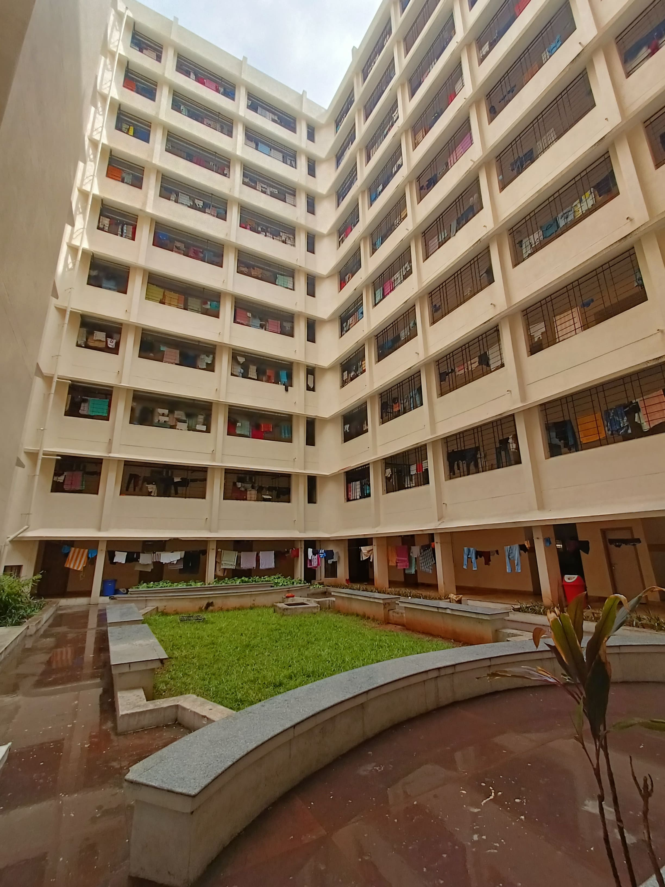
4) There are no rooms near the elevators(People waiting for the elevators can make noise that can be disturbing).
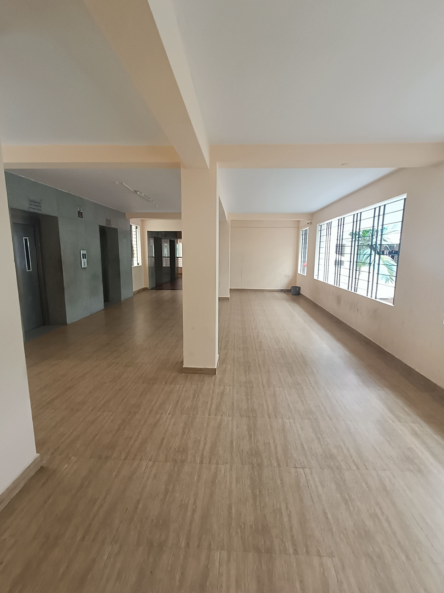
If we go a bit further we come across our next block(L block)
Things to notice:
1) A few rooms start facing other rooms(Reducing ventilation).
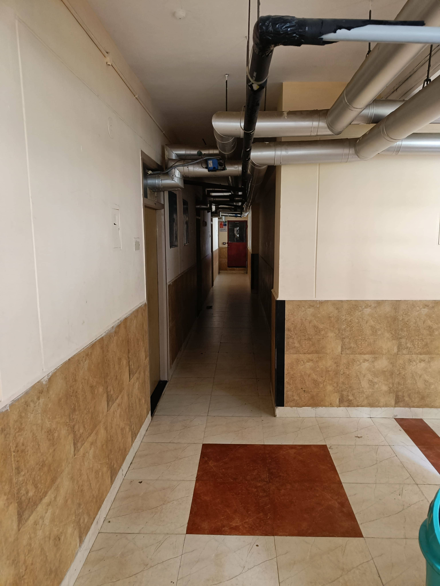
2) Rooms are present near elevators.
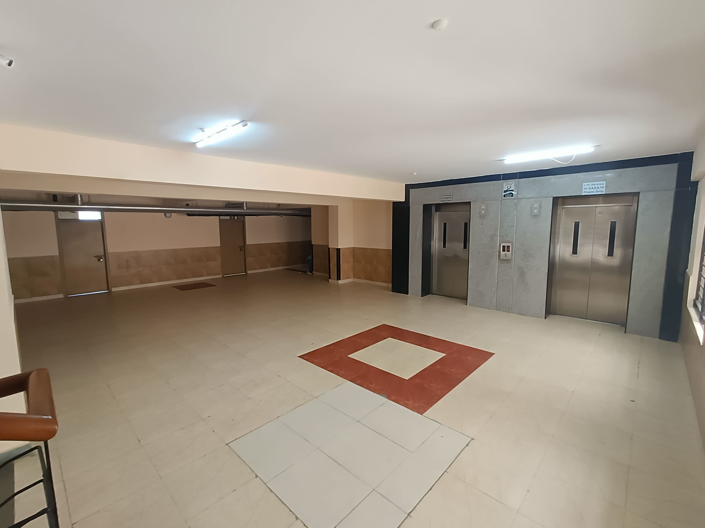
3) There are small trees to provide shade in the common area.
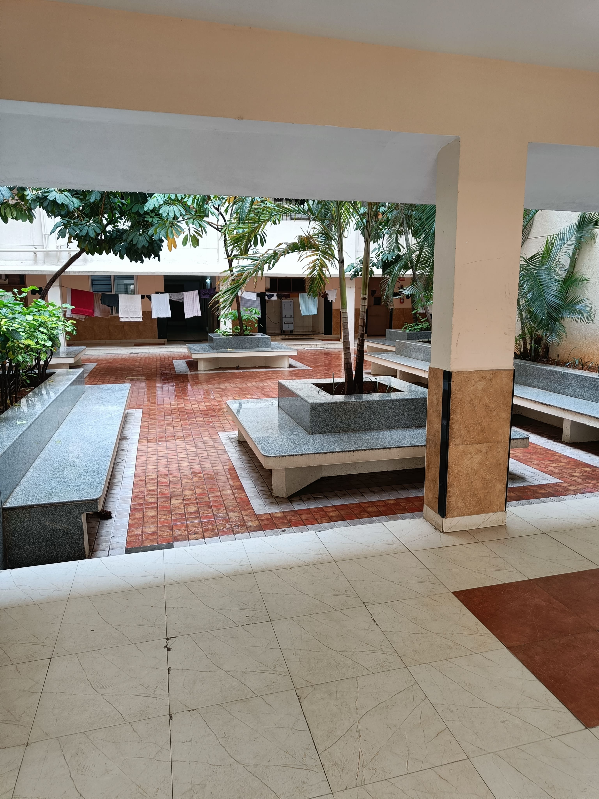
Hmmmm. The architect is playing around with his design, isn't he?
If we walk a little more, we end up at our next block(Q block)
Things to notice:
1) The access to the common area is controlled by the warden by using the door. There are no trees in the common area to provide shade.
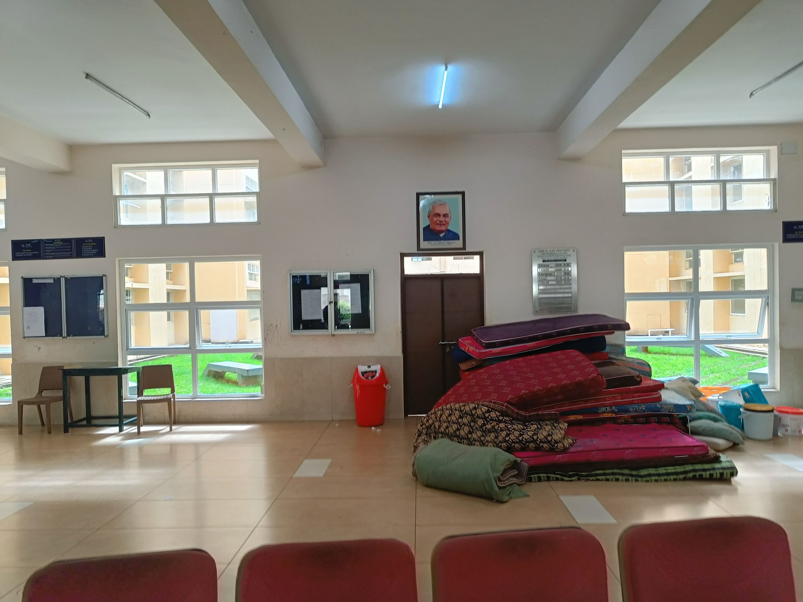
2) Almost all rooms(95%) on the floor face each other.
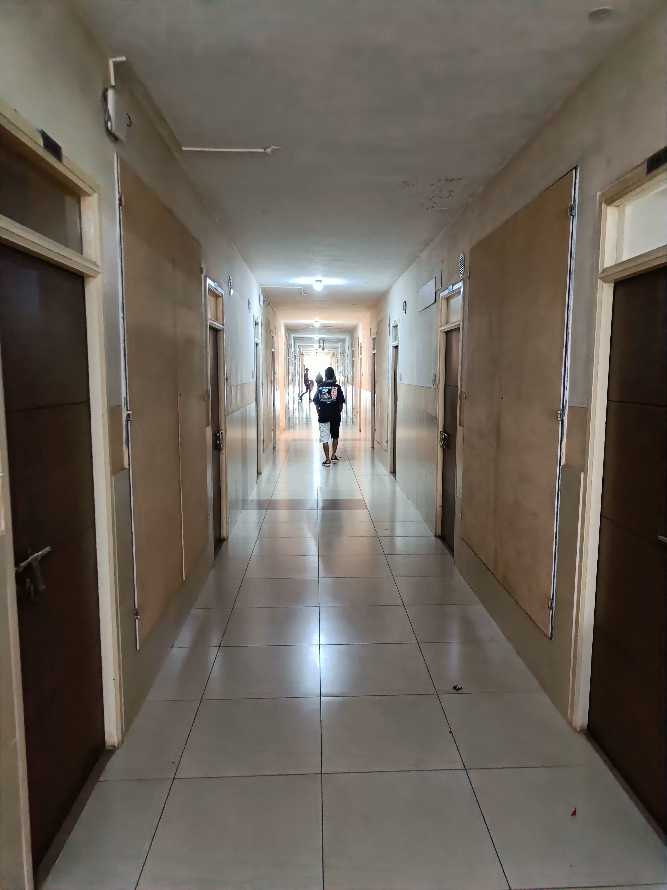
3) There are rooms near the elevator(again).
3) Huge buildings.
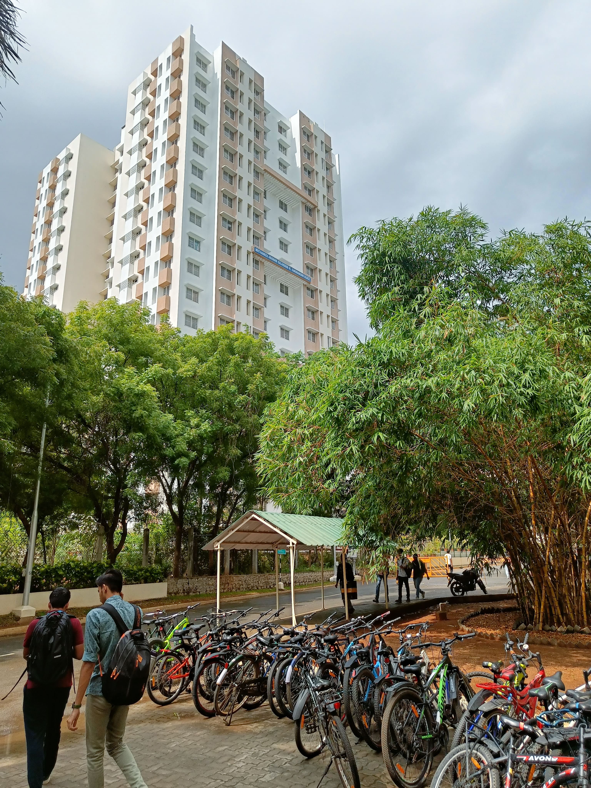
Note: I haven't changed the order of the blocks. If you walk from the "old" part of the men's hostel to the "new" part of the men's hostel, these are the blocks you will find in order.
Now I would like to contrast the above architecture with the architecture of the block I reside in(E block). This block is in the "old" men's hostel area.
Things to notice:
1) A place to hang out outside the block, while relaxing under the shade of a tree.
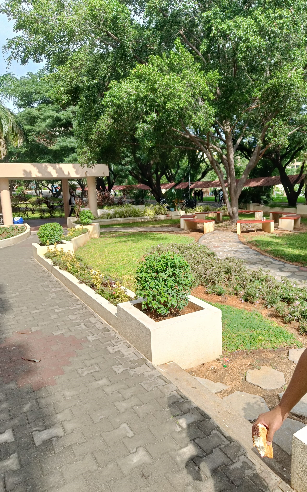
2) ALL rooms face the common area(badminton courts. My block has the most number of courts in a hostel block).
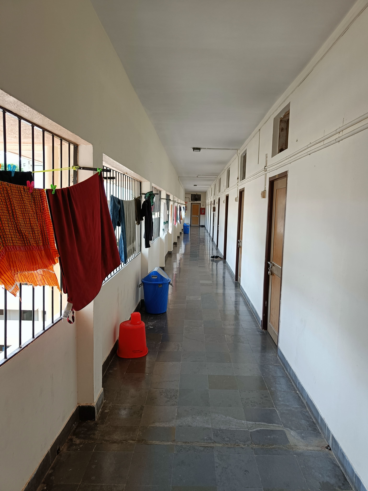
3) The walls have patterns on them which allows for good ventilation. Covered by a mesh to keep mosquitoes out.
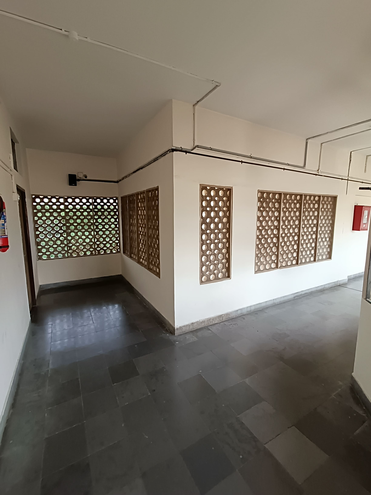
4) The first 2 floors don't have any safety grills(Why do the "modern" blocks have grills on the first floor?).
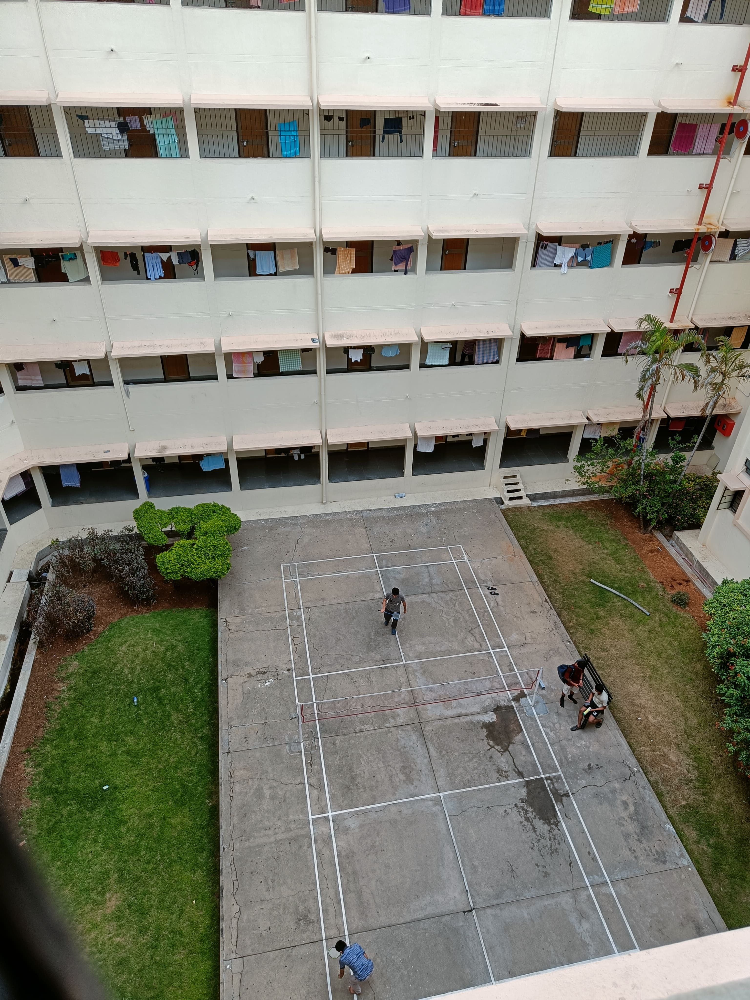
5) There are 2 washrooms on each floor. 1 to the east and 1 to the west. This means that no one's room faces the sun(unless you have a room in the corner).
As you can see, the architect of my block was thinking "This block will be occupied by students who left their homes to pursue their studies. How can I design my block in such a way that they feel comfortable and happy living here?", while the architect of the "modern" block was thinking "How the fuck can I fit more people inside this cube?"
The "modern" blocks are efficient but not designed for the human soul. I was talking to my roommate yesterday night when he told me that a lot of problems that he had with his old roommates, is because of lack of personal space. I used to constantly fall sick when I was in Q block. In fact, waves of diseases sweep through the block due to the sheer number of people. People managing the "modern" blocks are rude because they have to constantly deal with a lot of students.
A lot of things around us are designed to be efficient, but not for the human soul. I hate such designs.
EDIT_1:
I just remembered how there are 2 power supply lines which enter my room. One powers the fan and light, and the other powers the wall sockets. Therefore when you close the door, the supply line which powers the fan gets no power, whereas the wall sockets still function.
This is not the case in "modern" blocks. My guess would be, in order to simlpify electric wiring, they just installed 1 power supply line to each room. So if you lock your door from the outside, your laptop won't charge from the wall socket in your room.
Additional reading: slate star codex